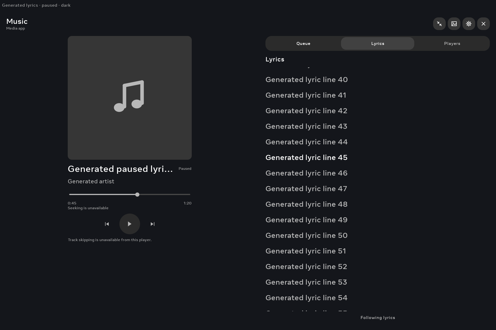

Actual Android 10 Portal Window captures at 2160 × 1440. Generated paused metadata exercises the production player: automatic following, manual browsing and return to the current line. The debug header and placeholder cover are fixture controls; Home supplies the normal chrome. Provider setup, audio, optical animation quality and panel FPS are outside these checks.
The final native check passes 88/88 assertions across both themes. Eight captured active lines have independently verified foreground pixels; two manual-browsing states intentionally leave that line off-screen. The original six semantics-reader failures remain in the evidence.
Music artwork and layout review · Final checks · First attempt · Independent pixel checks
